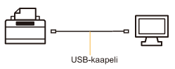
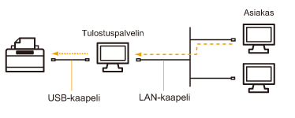

Tulostinajuri on ohjelmisto, joka tarvitaan tulostukseen tällä tulostimella.
 |
Lisätietoja tulostinajurin käyttöön vaadittavasta järjestelmäympäristöstä on kohdassa "Tulostuksen järjestelmävaatimukset".
|
|
|
Tulostinajurin asennusmenettely vaihtelee järjestelmäympäristön mukaan. Katso seuraavia tietoja järjestelmäympäristön mukaan.
Jos tulostin liitetään tietokoneeseen USB-kaapelilla

Tulostinajuri voidaan asentaa kahdella seuraavalla tavalla.
<Helppo asennus>
Asenna tulostinajuri mukana toimitetulta CD-ROM-levyltä (CD-ROM Setup). Sähköinen opas asennetaan samalla.
<Plug and Play>
Tunnistaa tulostimen Plug and Play (kytke ja käytä) -toiminnolla ja asentaa tulostinajurin mukana toimitetulta CD-ROM-levyltä.
Jos tulostin on jaettu tulostuspalvelinympäristössä

Jos tietokoneesi on tulostuspalvelin
Lisätietoja tulostinajurin asennusmenettelystä on kohdassa "Jos tulostin liitetään tietokoneeseen USB-kaapelilla".
|
|
Kun asennus on valmis, määritä tulostuspalvelimen asetukset.
|
Jos tietokoneesi on asiakastietokone
Tulostinajuri voidaan asentaa kahdella seuraavalla tavalla.
<Paikallinen asennus>
Voit asentaa tulostinajurin toimitukseen kuuluvalta CD-ROM-levyltä.
<Latausasennus>
Voit asentaa tulostinajurin ilman toimitukseen kuuluvaa CD-ROM-levyä lataamalla tulostinajurin tulostuspalvelimelta. Tulostinajuri voidaan ladata ja asentaa kahdella seuraavalla tavalla.